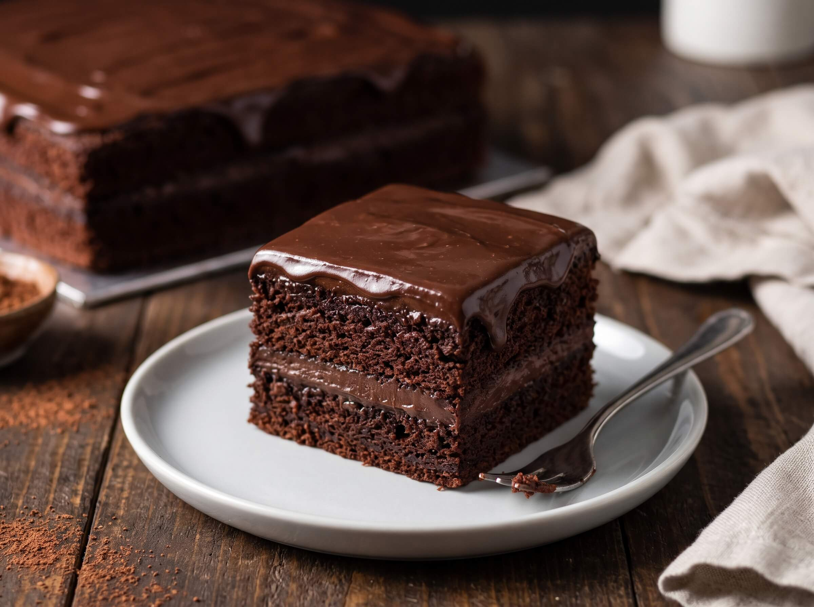

Resep Chocolate Moist Cake (Kek Ketagih) Tanpa Telur

🧂 Bahan-Bahan
A. Bahan Cake:
- 240 ml susu cair
- 140 gram gula pasir
- 60 ml minyak sayur
- 1/4 sdt garam
- 150 gram tepung terigu serbaguna
- 50 gram coklat bubuk
- 1 sdt baking powder
- 1 sdt bubuk kopi
B. Bahan Ganache Coklat:
- 250 gram susu cair
- 1 sdt agar-agar bubuk plain
- 250 gram dark chocolate compound
- 1 sdt mentega atau margarin
💛 Cara Pembuatan
- Campurkan susu cair dan gula, lalu aduk rata.
- Masukkan minyak sayur, lalu aduk rata kembali.
- Masukkan tepung terigu, coklat bubuk, baking powder, garam, dan bubuk kopi, lalu aduk rata.
- Setelah tercampur rata, masukkan ke dalam loyang yang sudah diberi baking paper.
- Kukus kue dengan api sedang cenderung kecil hingga matang selama 30 menit.
- Setelah matang, angkat kue dan dinginkan.
- Untuk bagian topping, panaskan susu hingga simmering.
- Tambahkan agar-agar bubuk, lalu aduk rata (setelah diaduk rata, matikan apinya).
- Masukkan dark chocolate compound, lalu aduk kembali hingga tercampur rata.
- Tambahkan margarin/mentega (supaya toppingnya mengkilap), lalu aduk rata.
- Tuang toppingnya di atas kue.
- Setkan dalam kulkas selama 2-3 jam.
- Setelah toppingnya set, kue bisa dikeluarkan dari loyang.
- Potong kue sesuai selera dan siap disajikan.
💡 Catatan:
- Kue bisa dipanggang (suhu 170-180°C selama 30 menit), namun saran lebih moist hasilnya kalau dikukus.
- Bubuk kopi opsional (hanya untuk mempertajam rasa coklat).
- Baking paper: kertas pelapis antilengket dan tahan panas yang digunakan sebagai alas loyang.
- Simmering: mengeluarkan uap halus dan gelembung-gelembung kecil di pinggiran panci, tetapi belum mendidih penuh.
- Link resep video » klik disini